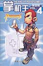

|  |
敬告：本文已刊在『掌机王』第四辑上。版权属『游戏机实用技术』杂志社所有。 |
kenyoの话：虽然风来的西林GB2发售至今已经1年多了，但是一款传世之作无论何时都会让人百玩不厌的。偶通过几百余小时的反复研究，再经过N天不眠不休的疾书，终于完成这篇究极心得。自认为本篇研究仅属中级水平，更为高级的研究是对特训咒文、救助咒文、复活咒文、礼咒文的规律解析以及风来人番付的高点数深入研究，可惜我能力实在有限，无法达到那种境界。大家要记住，风来西林的研究是永无止境的，所以若哪位圣人有这方面的高水平研究不妨投稿给传统媒体以便更多的风来人能够分享。
本篇研究共分多个PART，是由蜂蜜、川贝、桔梗、灵芝、千年人参配以天山雪莲等珍贵药材提炼七七四十九天精制而成，每PART均含有人体所需的各种维他命，蕴含丰富的高蛋白质，不含胆固醇，不须冷藏也绝不含防腐剂，绝对是风来人居家旅行、提升功力的必备补品！偶有幸邀请到同为风来界高手的qianlc参与本文PART.3的写作，特此感谢！看了本文之后大家可能会有想重玩的冲动，那么请立即行动，翻出卡带把GBA启动，在风来的西林GBA版发售前再一次重温当初的感动！若有问题或意见，欢迎到论坛发贴共同探讨。 |
1F 秘传心法
秘传心法1：『シュ�`ベル肉店』
秘传心法2：『壶つりちょうろう壶店』
秘传心法3：『无限祝福法』
秘传心法4：『ミニマゼルン系降临以及无限合成』
秘传心法5：『怪物肉无限增殖法』
秘传心法6：『极限满腹度200%』
秘传心法7：『极限级别LV99』 |
| 2F 怪物肉通透分析 |
| 3F ？？？？？？ |
1F 秘传心法
秘传心法1：『游戏初期升级秘法』
秘传心法2：『99支箭入手法』
秘传心法3：『あたらずの腕轮活用法』
秘传心法4：『チキンの肉入手法』
秘传心法5：『つるはし活用法』
秘传心法6：『道具无限收集法』
|
| 2F ？？？？？？ |
| 1F 风来人事件及称号 |
| 2F 奈落无盾攻略（by qianlc） |
| 3F 煅冶屋裸奔攻略 |
© 2003. Copyright. 游戏机实用技术® 掌机王® 风来人绝对领域®